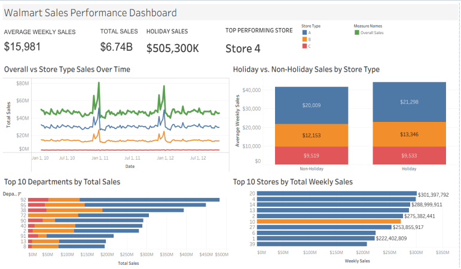
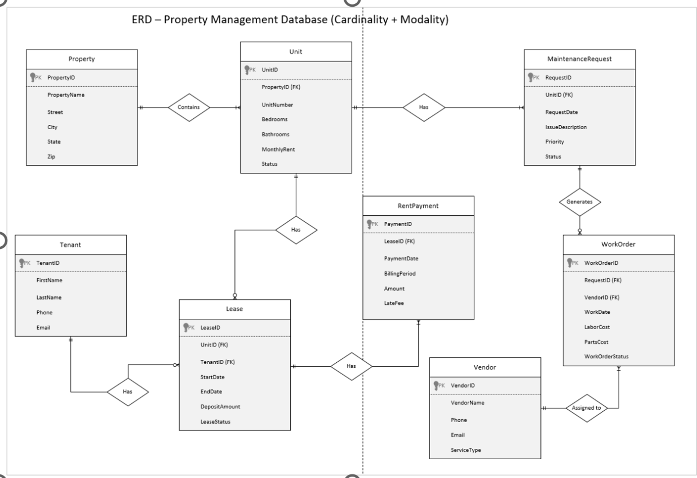
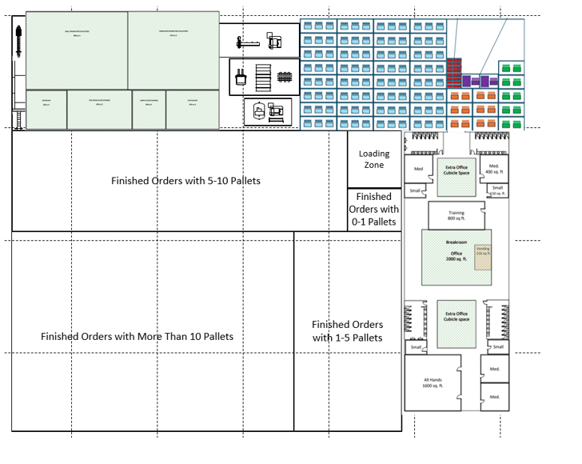
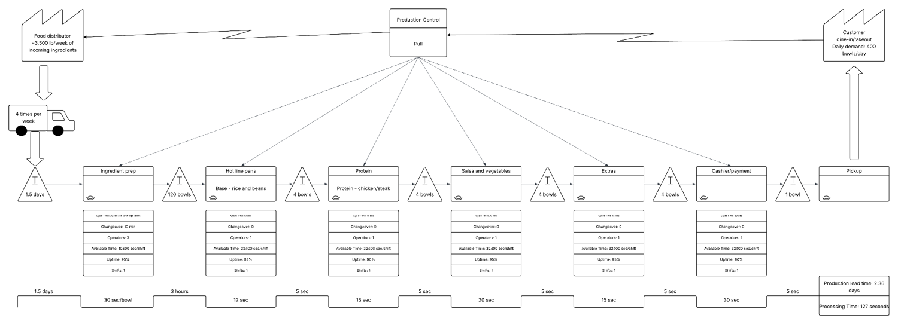
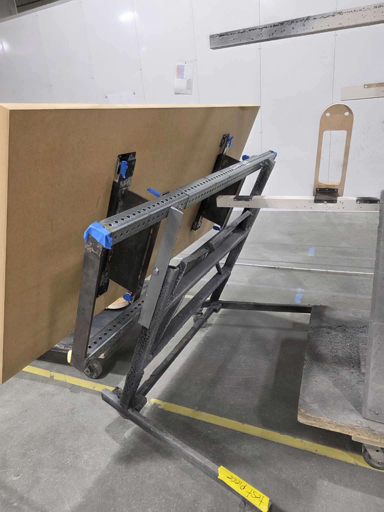
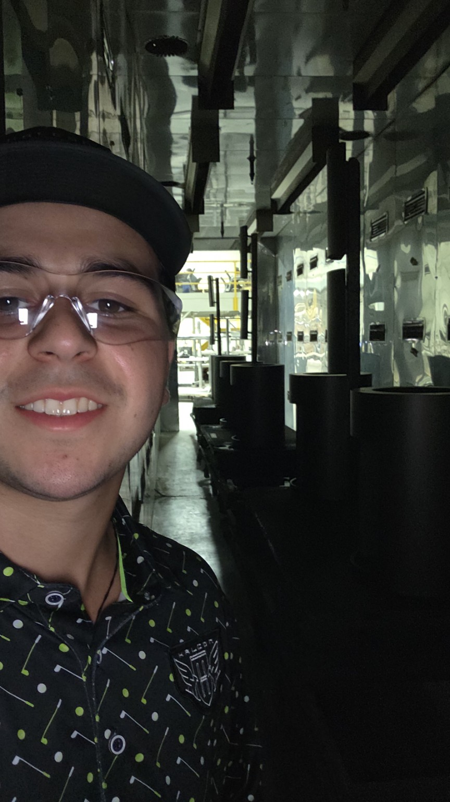

I am pursuing a B.S. in Industrial Engineering and an M.S. in Business Analytics at Worcester Polytechnic Institute (expected May 2028). My interests center on using data, optimization, and business intelligence to solve supply chain and operational challenges. My academic work spans retail sales dashboards, large-scale resource allocation, database systems, and process optimization, complemented by hands-on internship experience.
Seeking 2027 internships: Supply Chain Analyst · Business Analyst · Operations Analyst · Business Intelligence · Logistics / Planning Analytics
Selected academic work
Projects & case studies
A curated selection from coursework at WPI. Projects were completed in academic settings; team contributions are described as collaborative where appropriate.
Business intelligence · Retail analytics
Walmart Sales Performance Dashboard

Tableau sales dashboard showing store performance, holiday patterns, and departmental sales.
Challenge: Convert multi-dimensional weekly retail sales data into a dashboard managers can use to spot trends and compare performance.
Approach: Collaborated on a Tableau business intelligence prototype using cleaned and merged sales data. The dashboard supports analysis by store, department, store type, time period, and holiday status, with KPI views and interactive filtering.
Business relevance: Performance monitoring, commercial analytics, and decision support at scale.
TableauETL / data preparationKPI designRetail analytics
Results & findings
Created a dashboard reporting $6.74B in total sales, $15,981 in average weekly sales, and Store 4 as the top-performing store in the analyzed dataset. The visualizations compare holiday and non-holiday sales and rank stores and departments, making differences in retail performance visible.
Prescriptive analytics · Optimization
Child Welfare Caseworker Allocation Model
30,000+Decision variables
Challenge: Allocate caseworkers to cases while balancing fit quality, available hours, workload, and case complexity.
Approach: Built a team linear programming model in Excel/OpenSolver, defining assignment-hour decision variables, an objective function maximizing worker-to-case fit, and operational constraints. Evaluated a multi-period version and feasibility/sensitivity questions.
Business relevance: Transferable to workforce planning, distribution resource allocation, and constrained supply chain decisions.
The Phase II model produced a total fit score of 790.72473 after introducing a 35-mile maximum travel-distance constraint. It retained approximately 98% of the Phase I fit score while producing assignments that satisfied the additional geographic restriction.
Data management · Database systems
Property Management Relational Database

Entity-relationship diagram of the property management database and its key relationships.
Collaborated on a Microsoft Access database design for tracking properties, units, tenants, leases, rent payments, maintenance requests, vendors, and work orders. Produced entity-relationship and Access relationship diagrams and documented normalized relational tables.
Relevant to data architecture, relational modeling, reporting infrastructure, and business process data.
Microsoft AccessERD3NF
Deliverables & results
Produced a relational database structure connecting properties, units, tenants, leases, payments, maintenance requests, vendors, and work orders. Built queries for operational reporting, including outstanding maintenance requests, payment or lease records, and maintenance spending.
Operations research · Facilities
Maddox Solutions Facility Planning

Proposed warehouse and facility floor plan with pallet storage, loading, and support areas.
Developed a team manufacturing facility layout using Systematic Layout Planning, From-To analysis, VIP PlanOpt, and Visio. Evaluated rectilinear material flow costs alongside space, storage, access, and safety requirements, then produced a scaled proposed layout.
VIP PlanOptVisioCost modeling
Design results
The final VIP PlanOpt iteration produced a 314 ft × 378 ft facility footprint (118,692 sq. ft.). The proposed layout placed high-volume finished goods near loading docks and high-traffic departments near one another to reduce unnecessary movement. The report describes lower flow costs qualitatively.
Process analytics · Continuous improvement
Chipotle Service Process Improvement

Value stream map of ingredient flow, assembly stations, inventory, and processing lead time.
Analyzed customer flow and digital order fulfillment through a team Lean Six Sigma/DMAIC project. Used structured process analysis and standard-work concepts to identify bottlenecks and develop improvement recommendations.
DMAICLean Six SigmaProcess analysis
Analysis & findings
The value stream map documented a 2.36-day production lead time and 127 seconds of processing time. The analysis highlighted the contrast between waiting/inventory time and hands-on processing, providing a basis for recommendations on flow and standard work.
Exploratory data science
Drug Consumption Data Analysis
Investigated associations between demographic and psychological attributes and self-reported substance consumption using a public UCI dataset. Assessed data limitations, including self-reporting bias, cross-sectional design, geographic skew, and questionable responses.
Exploratory data analysisData qualityStatistical thinking
Findings & limitations
The analysis examined relationships between demographic and personality variables and reported drug consumption. It also identified limitations affecting interpretation, including self-report bias, cross-sectional data, and sample composition.
Sustainable supply chains · Systems thinking
Cobalt Chain: Supply Chain Simulation Game
Contributed to a classroom game exploring cobalt sourcing, battery production, recycling, and competing stakeholder incentives. The simulation connects supply chain decisions with financial, social, and environmental tradeoffs.
Created a playable classroom simulation framework connecting cobalt sourcing, battery production, recycling, and stakeholder trade-offs. The outcome was an educational decision-making tool, rather than a measured change in a real supply chain.
Software · Data systems
Object-Oriented Auction Application
Java coursework project with classes for items, bids, sold items, database operations, and a desktop user interface.
JavaObject-oriented designDatabase integration
Project outcome
Developed a coursework application architecture representing auction items, bids, completed sales, and database interactions through Java classes and a desktop interface.
Applied experience
Experience & measurable outcomes
Halcon Furniture
Industrial Engineering Intern · Summer 2026


Participated in Kaizen events and analyzed workflows across three departments. Used time studies, material-flow analysis, and operational tracking tools to support decisions about staffing, downtime, production hours, and process efficiency. Reduced process steps by 20% in analyzed workflows.
Investigated equipment and programming issues, supported automation of a production process, and built Excel inventory-tracking tools. Evaluated a solution that reduced manual operator requirements.
Inventory analyticsAutomationCost evaluation
Worcester Polytechnic Institute
Achieving Effective Operations Lab Teaching Assistant · Fall 2026–Present
Lead and support laboratory instruction in Lean Six Sigma, time studies, operational efficiency, and data-driven problem solving.
Skills
Tools & methods
Analytics & data
Excel · SQL · Tableau · Power BI · Python · RStudio · Microsoft Access · Data analysis · Business intelligence · Statistical analysis